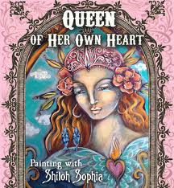

The Four Faces of the Sacred Feminine
Exploring the symbolism of the triple-goddess as a celebration of women's life transitions and sacred stages
Maiden
"The Maiden is the part of us that represents Springtime, new beginnings, freedom and adventure, hope, desire, new-found sexuality and physical vitality. Through her we explore our identity and how to move safely out in the world."
Mother
"The Mother is Summertime, that aspect of our self that brings forth growth, creativity, empathy, and nourishment. Through her we learn to balance nurturing ourselves with caring for others.".
Queen

"The Queen is the archetype of the Autumn harvest which provides us with wisdom, cohesion, integration, and fulfillment. Through her influence we cultivate our own inner guidance system, learning what to let go of and what to embrace as we move toward wholeness."
Crone

"The Crone is the ancient, wizened part of us that carries the stillness of Winter, deep inner knowing, truth, and connection to the cosmos and our ancestors. Through her we can experience oneness, the bigger picture, and connect with all that is."